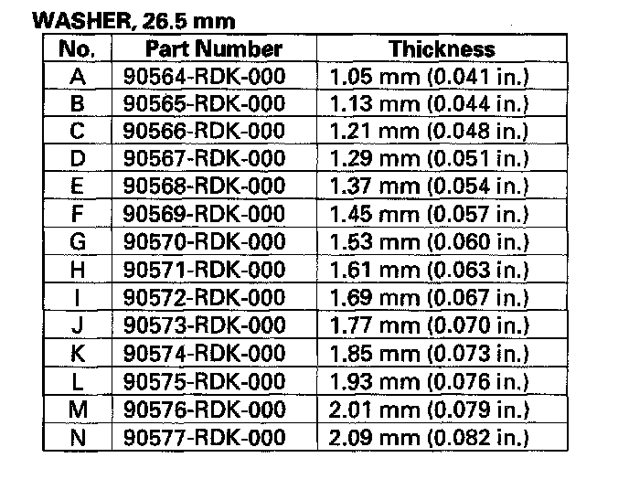
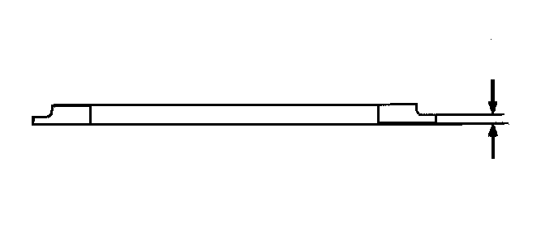

Part 2
Intermediary Shaft Installation Height Inspection/Adjustment1. Install the intermediary shaft (A) in the torque converter housing, and install the 26.5 mm washer (B) on the intermediary shaft.
2. Install the new gasket (C) on the torque converter housing.
3. Measure the height (D) of the intermediary shaft installation between the surface (E) of the gasket and the surface of the 26.5 mm washer (F).
4. If the measurement is out of standard, remove the 26.5 mm washer and measure its thickness.
5. Select and install a new washer, then recheck the installation height.

Clutch Disassembly
Special Tools Required
^ Clutch spring compressor attachment 07LAE-PX40100 or 07HAE-PL50101
^ Clutch spring compressor bolt assembly 07GAE-PG40200 or 07GAE-PG4020A
1. Remove the snap ring (A) with a screwdriver (B).
2. Remove the 1st clutch end plate (A) 1st clutch discs (B) (5) 1st clutch wave-plates (C) (5) disc spring (D) 1st-hold clutch plate B (E) 1st-hold clutch discs (F) (3) 1st-hold clutch wave-plates (G) (2) and 1st-hold clutch flat-plate (H) from the 1st/1st-hold clutch drum (I).
3. Make reference marks on the clutch wave-plates.
4. Remove the clutch end plate (A) clutch discs (B) (7) clutch wave-plates (C) (3) and clutch flat-plates (D) (4) from the 2nd clutch drum (E).
5. Make reference marks on the clutch wave-plates.
6. Remove the clutch end plate (A) clutch discs (B) (6) clutch wave-plates (C) (3) and clutch flat-plates (D) (3) from the 3rd clutch drum (E).
7. Make reference marks on the clutch wave-plates.
8. Remove the clutch end plate (A) clutch discs (B) (5) clutch wave-plates (C) (2), clutch flat-plates (D) (3) and disc spring (E) from the 4th clutch drum (F).
9. Make reference marks on the clutch wave-plates.
10. Remove the clutch end plate (A) clutch discs (B) (5) clutch wave-plates (C) (2) clutch flat-plates (D) (3) and disc spring (E) from the 5th clutch drum (F).
11. Make reference marks on the clutch wave-plates.
12. Install the clutch spring compressor attachments and the clutch spring compressor bolt assembly.
13. Be sure the clutch spring compressor attachment (A) is adjusted to have full contact with the spring retainer (B) on the 1st, 2nd, and 4th clutches.
14. If either end of the clutch spring compressor attachment is set over an area of the spring retainer that is unsupported by the return spring, the retainer may be damaged.
15. Set the clutch spring compressor attachment (A) on the spring retainer (B) of the 3rd and 5th clutches so the clutch spring compressor attachment works on the clutch return spring (C).
16. If either end of the clutch spring compressor attachment is not set over the clutch return spring end (A) the retainer may be damaged.
17. Compress the return spring until the snap ring can be removed.
18. Remove the snap ring with the snap ring pliers.
19. Remove the clutch spring compressor attachments and the clutch spring compressor bolt assembly.
20. Remove the snap ring (A) spring retainer (B) and return spring (C).
21. Wrap a shop rag around the clutch drum, and apply air pressure to the fluid passage to remove the piston. Place a finger tip on the other passage while applying air pressure.
22. Remove the 1st/1st-hold clutch piston (A) from the clutch drum (B) and remove the O-rings from the 1st clutch piston.
23. Remove the 1st-hold clutch piston (A) from the 1st clutch piston (B) and remove the O-rings from the 1st-hold clutch piston.
24. Remove the clutch piston, and remove the O-rings from the 2nd, 3rd, 4th, and 5th clutch pistons.
Clutch Inspection
1. Inspect the clutch pistons and clutch piston check valves (A).
2. If the clutch piston check valve is loose or damaged, replace the clutch piston.
3. Check the spring retainer for wear and damage.
4. If the spring retainer is worn or damaged, replace it.
5. Inspect the clutch discs, clutch plates, and clutch end plate for wear, damage, and discoloration.
Clutch Discs:
Standard Thickness: 1.94 mm (0.076 in.)
Clutch Flat-plates and Clutch Wave-plates
Standard Thickness:
1st clutch: 1.6 mm (0.063 in.)
1st-hold clutch: 1.8 mm (0.071 in.)
2nd clutch: 1.8 mm (0.071 in.)
3rd clutch: 1.8 mm (0.071 in.)
4th clutch: 1.6 mm (0.063 in.)
5th clutch: 1.6 mm (0.063 in.)
6. If the clutch discs are worn or damaged, replace them as a set. If the clutch discs are replaced, inspect the clutch end-plate-to-top disc clearance.
7. If any plate is worn, damaged, or discolored, replace the damaged plate with a new plate, and inspect the other wave-plates for a phase difference. If the clutch plate is replaced, inspect the clutch end-plate-to-top disc clearance.
8. If the clutch end plate is worn, damaged, or discolored, inspect the clutch end-plate-to-top disc clearance, then replace the clutch end plate.
Clutch Wave-plate Phase Difference Inspection
1. Place the clutch wave-plate (A) on a surface plate, and set a dial indicator (B) on the wave-plate.
2. Find the bottom (C) of a phase difference of the wave-plate, zero the dial indicator and make a reference mark on the bottom of the wave-plate.
3. Measure the phase differences of 1st, 1st-hold, 2nd, and 3rd clutch wave-plates.
-1 Rotate the clutch wave-plate a bout 60-degrees while holding the wave-plate by its circumference. The dial indicator should be at the top of a phase difference. Do not rotate the wave-plate while holding its surface, always rotate it by holding its circumference.
-2 Read the dial indicator. The dial indicator reads the phase difference of the wave-plate between the bottom and top.
Standard Phase Difference:
1st clutch: 0.17-0.30 mm (0.007-0.012 in.)
1st-hold
clutch: 0.07-0.20 mm (0.003-0.008 in.)
2nd clutch: 0.07-0.20 mm (0.003-0.008 in.)
3rd clutch: 0.07-0.20 mm (0.003-0.008 in.)
-3 Rotate the wave-plate a bout 60-degrees. The dial indicator should be at the bottom of a phase difference, and zero the dial indicator.
-4 Measure the phase difference at the other two tops of the wave-plate by following steps -1 thru -3.
4. Measure the phase differences of 4th and 5th clutch wave-plates.
-1 Rotate the clutch wave-plate 5-tooth or 4-tooth while holding the wave-plate by its circumference. The dial indicator should be at the top of a phase difference. Do not rotate the wave-plate while holding its surface, always rotate it by holding its circumference.
-2 Read the dial indicator. The dial indicator reads the phase difference of the wave-plate between the bottom and top.
Standard Phase Difference:
4th clutch: 0.07-0.20 mm (0.003-0.008 in.)
5th clutch: 0.07-0.20 mm (0.003-0.008 in.)
-3 Rotate the wave-plate 5-tooth or 4-tooth. The dial indicator should be at the bottom of a phase difference, and zero the dial indicator.
-4 Measure the phase difference at the other two tops of the wave-plate by following steps -1 thru -3.
5. If the two values of the three measurements are within the standard, the wave-plate is OK. If the two values of the three measurements are out of the standard, replace the wave-plate.
Clutch Clearance Inspection
Special Tools Required
Clutch compressor attachment 07ZAE-PRP0100
1. Inspect the clutch piston, discs, plates, and end plate for wear and damage and inspect the clutch wave-plate phase difference if necessary.
2. Install the 1st-hold clutch piston in the 1st clutch piston, and install the 1st/1st-hold clutch piston (A) in the 1st/1st-hold clutch drum (B). Do not install the O-rings on the clutch pistons during inspection.
3. Install the 1st-hold clutch flat-plate (A) alternately install the clutch discs (B) (3) and the 1st-hold clutch wave-plates (C) (2) then install the 1st-hold clutch plate B (D) with the flat side down in the direction shown.
4. Measure the 1st-hold clutch plate B-to-top-disc clearance with a feeler gauge (A) while pressing the 1st-hold clutch plate B down. Take measurements in at least three places, and use the average as the actual clearance.
5. If the clearance is out of standard, replace the 1st-hold clutch plates and discs as a set, and recheck.
6. Install the disc spring (A) on the 1st-hold clutch plate B in the direction shown. Starting with the 1st clutch wave-plate, alternately install the wave-plates (B) (5) and discs (C) (5) in the 1st clutch drum (D) then install the clutch-end-plate (E) with the flat side down.
7. Install the clutch pistons in the 2nd, 3rd, 4th, and 5th clutch drums. Do not install the O-rings on the clutch pistons during inspection.
8. Starting with the 2nd clutch flat-plate, alternately install the flat-plates (A) (4) and discs (B) (4) in the 2nd clutch drum (C) and alternately install the wave-plates (D) (3) and discs (B) (3). Install the clutch-end-plate (E) with the flat side down on the top disc.
9. Starting with the 3rd clutch flat-plate, alternately install the flat-plates (A) (3) and discs (B) (3) in the 3rd clutch drum (C) and alternately install the wave-plates (D) (3) and discs (B) (3). Install the clutch-end-plate (E) with the flat side down on the top disc.
10. Install the disc spring (A) in the 4th clutch drum (B) in the direction shown. Starting with the 4th clutch flat-plate, alternately install the flat-plates (C) (3) and discs (D) (3) and alternately install the wave-plates (E) (2) and discs (D) (2). Install the clutch-end-plate (F) with the flat side down on the top disc.
11. Install the disc spring (A) in the 5th clutch drum (B) in the direction shown. Starting with the 5th clutch flat-plate, alternately install the flat-plates (C) (3) and discs (D) (3) and alternately install the wave-plates (E) (2) and discs (D) (2). Install the clutch-end-plate (F) with the flat side down on the top disc.
12. Install the snap ring with a screwdriver to secure the clutch-end-plate.
13. Set a dial indicator (A) on the clutch-end-plate (B).
14. Zero the dial indicator with the clutch-end-plate lifted up to the snap ring (C).
15. Release the clutch-end-plate to lower the clutch-end-plate, then put the clutch compressor attachment on the end-plate (A).
16. Press the clutch compressor attachment down with 150-160 N (15-16 kgf, 33-35 lbf) (B) using a force gauge, and read the dial indicator (C).
17. The dial indicator reads the clearance (D) between the clutch-end-plate and top disc (E). Take measurements in at least three places, and use the average as the actual clearance.
Clutch End-Plate-to-Top Disc Clearance:
Service Limit:
1st clutch: 1.15-1.35 mm (0.045-0.053 in.)
2nd clutch: 1.05-1.25 mm (0.041-0.049 in.)
3rd clutch: 0.9-1.1 mm (0.035-0.043 in.)
4th clutch: 0.75-0.95 mm (0.030-0.037 in.)
5th clutch: 0.75-0.95 mm (0.030-0.037 in.)
18. If the clearance is out of the service limit, select a new clutch-end-plate from the following table.

19. Install the new clutch-end-plate, and recheck the clearance. If the thickest clutch-end-plate is installed, but the clearance is still over the service limit, replace the clutch discs and plates.
Clutch Reassembly
Special Tools Required
^ Clutch spring compressor attachment 07LAE-PX40100 or 07HAE-PL50101
^ Clutch spring compressor bolt assembly 07GAE-PG40200 or 07GAE-PG4020A
1. Soak the clutch discs thoroughly in ATF for a minimum of 30 minutes.
2. Install the new O-rings (A) on the 1st-hold clutch piston (B) and install the 1st-hold clutch piston in the 1st clutch piston (C).
3. Install the new O-rings (A) on the 1st clutch piston (B) and install the 1st/1st-hold clutch piston in the 1st/1st-hold clutch drum (C) while applying pressure and rotating to ensure proper seating. Do not pinch the O-ring.
4. Install the O-rings (A) on the 2nd, 3rd, 4th and 5th clutch piston (B).
5. Install the clutch pistons in the clutch drums (C) while applying pressure and rotating to ensure proper seating. Do not pinch the O-ring.
6. Install the return spring (A) and spring retainer (B) and position the snap ring (C) on the spring retainer.
7. Install the clutch spring compressor attachments and the clutch spring compressor bolt assembly.
8. Be sure the clutch spring compressor attachment (A) is adjusted to have full contact with the spring retainer (B) on the 1st, 2nd, and 4th clutches.
9. If either end of the clutch spring compressor attachment is set over an area of the spring retainer that is unsupported by the return spring, the retainer may be damaged.
10. Set the clutch spring compressor attachment (A) on the spring retainer (B) of the 3rd and 5th clutches so the clutch spring compressor attachment works on the clutch return spring (C).
11. If either end of the clutch spring compressor attachment is not set over the clutch return spring end (A) the retainer may be damaged.
12. Compress the return spring until the snap ring can be installed.
13. Install the snap ring with the snap ring pliers.
14. Remove the clutch spring compressor attachments and the clutch spring compressor bolt assembly.
15. Install the 1st-hold clutch flat-plate (A) alternately install the clutch discs (B) (3) and the 1st-hold clutch wave-plates (C) (2) in the 1st/1st-hold clutch drum (D) then install the 1st-hold clutch plate B (E) with the flat side down in the direction shown.
16. Install the disc spring (F) on the 1st-hold clutch plate B in the direction shown. Starting with the 1st clutch wave-plate, alternately install the wave-plates (G) (5) and discs (H) (5) then install the clutch-end-plate (I) with the flat side down on the top disc.
17. Starting with the 2nd clutch flat-plate, alternately install the flat-plates (A) (4) and discs (B) (4) in the 2nd clutch drum (C) and alternately install the wave-plates (D) (3) and discs (B) (3). Install the clutch-end-plate (E) with the flat side down on the top disc.
18. Starting with the 3rd clutch flat-plate, alternately install the flat-plates (A) (3) and discs (B) (3) in the 3rd clutch drum (C) and alternately install the wave-plates (D) (3) and discs (B) (3). Install the clutch-end-plate (E) with the flat side down on the top disc.
19. Install the disc spring (A) in the 4th clutch drum (B) in the direction shown. Starting with the 4th clutch flat-plate, alternately install the flat-plates (C) (3) and discs (D) (3) and alternately install the wave-plates (E) (2) and discs (D) (2). Install the clutch-end-plate (F) with the flat side down on the top disc.
20. Install the disc spring (A) in the 5th clutch drum (B) in the direction shown. Starting with the 5th clutch flat-plate, alternately install the flat-plates (C) (3) and discs (D) (3) and alternately install the wave-plates (E) (2) and discs (D) (2). Install the clutch-end-plate (F) with the flat side down on the top disc.

21. Install the snap ring with a screwdriver to secure the clutch-end-plate.